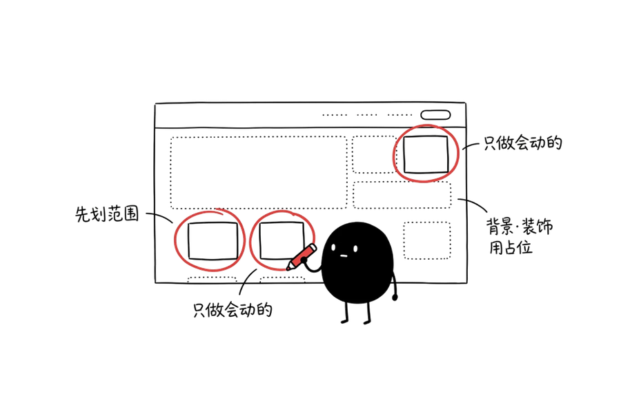
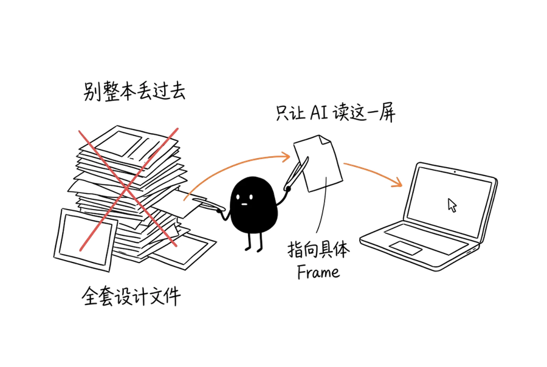
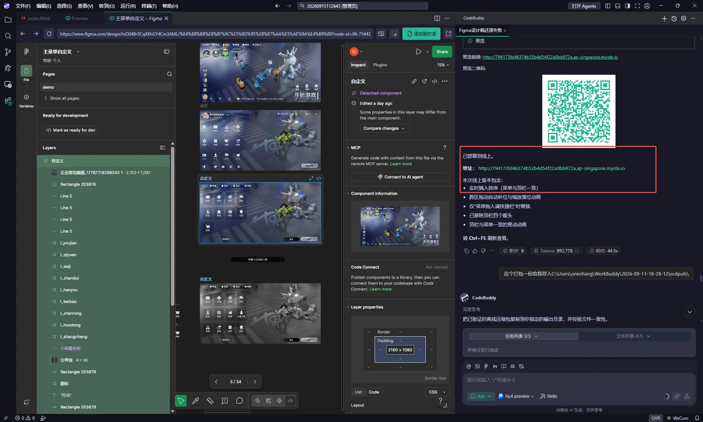
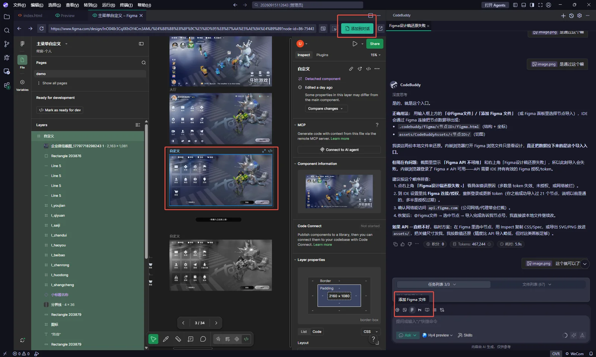

原型制作分享 · 2026.09
把静态设计稿，做成能走一遍的体验。
我用 AI 协作制作高保真 HTML Demo，但目标不是把整页逐像素复刻，而是优先还原会被点击、会变化、会影响演示路径的部分。
先划范围，再开始还原
背景、装饰和不会被点击的区域可以用图片、视频或占位处理。先确定哪些操作需要演示、哪些状态会改变、哪些路径必须能走通，才能把时间花在真正影响体验判断的地方。

什么时候值得做成 HTML Demo
当一个界面有多种状态切换，或需要演示拖拽、长按、排序、弹窗、禁用和连续反馈时，静态稿很容易让人误解“点了以后会发生什么”。这时做成可以操作的原型，会比多张截图更直接。只展示视觉风格或单页布局时，静态稿已经足够。
把必要的设计稿交给 AI
我会优先指向具体 Frame 或具体元素，而不是把整份设计文件丢进去。必要功能要有清晰的命名；过程稿和无关页面先排除。让 AI 读得更少，不是为了偷懒，而是减少它自己选错对象、做多余元素的机会。

先说明交互关系
给 AI 的输入不该只是“还原这个页面”。我会明确：点击哪个元素，进入哪个页面或状态；当前页面是否保留；这是切页、弹窗还是状态变化；以及哪些区域不需要做成真实功能。范围越明确，原型越容易保持正确。
修改时常用四种方式：截图标注位置和范围；一句话描述明确改动；把带条件的交互写成完整规则；或者直接反馈体验感受，例如拖动速度不一致、判定区域不对。

从主流程开始，再补关键分支
先让主要操作能走通，再补会影响理解的边界状态，例如未解锁、达到上限、取消、返回和保存。效果偏离时，直接回到可用版本，再用更具体的反馈修正一个局部，而不是在错误的结果上继续叠加修改。
案例一：玩法大厅
这个案例把三种不同的变化放进同一个 Demo：点玩法卡片时，人还留在大厅但卡片切换选中状态；点标题和顶栏时进入积分页或兑换页；点排行榜时，面板弹出而大厅仍留在底下。玩法未开启时，开始按钮也会切换成锁定状态。
案例二：菜单自定义
这个案例不靠页面跳转，而是集中验证同一界面的状态变化：拖拽项目后重排快捷入口，长按进入编辑态，顶部操作条切换为恢复默认、取消和保存；达到入口上限时给出提示，并阻止继续添加。
发布与继续修改
原型能在本地跑通后，还需要放到团队可打开的地址里。后续修改时，我会保留能工作的版本；如果某次调整破坏了原有结构，就先回退，再把“只改哪里、不要动什么”说明得更具体。
